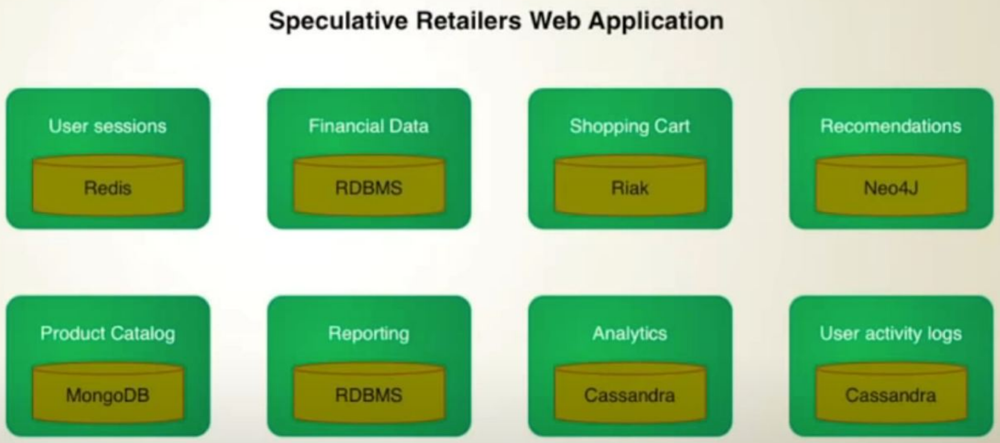

Databases
It doesn't makes sense to talk about database (rdbms vs nosql) if we dont know QPS . If we have less than 10k-20k/sec write requests we can use even not sharded rdbms. If we have to support 100k/sec write requests it makes sense to start talk about noSql.
- RDBMS vs Columnar vs KV
- https://docs.microsoft.com/en-us/azure/architecture/guide/technology-choices/data-store-overview
- Dzone articles are really good at these. You can learn a lot from there about the types of databases, when to use realtime or graph or kv databases and much more
- YT Introduction to NoSQL • Martin Fowler • GOTO 2012

Sharding
https://vitess.io/docs/15.0/reference/features/sharding/ - for MySQL
Shard Size
how much is typically the max or recommended size of each shard of say MySQL or for PostgreSQL ? This will help me estimate the number of shards required given that say I need to store 1 PB of data.
The link below in "Data Sharing" claims that the avg shard size ranges from 20 to 40 GB. Perhaps this is for MySQL. https://www.codercrunch.com/design/634265/designing-instagram#mcetoc_1dv10vl8s1l
Replication
Why replicate data?
- improving availability
- enabling disaster recovery
- improve performance, leveraging Read Replicas
- keep data geographically close to the user, e.g., CDN
Index
An index is an auxiliary data structure that speeds up look-ups by a particular column. As a mental model (not completely accurate), think of taking a particular column of a table and building a balanced BST from the values of that column so you can look each one up in O(log n) time. And imagine each node in the tree has a pointer to the corresponding row in the table.
For the flexible sharding model, you might imagine it using a timestamp to pick the pertinent sharding strategy or a feature ID.
Hinted Handoff & Schemaless Bufffered Writes
In Cassandra's hintedhandoff or Schemaless's Buffered writes - How is the case for master failure before replicating the data to a quorum of nodes handled ? Since these systems are designed to be max write available they cannot discard writes (like in High-water mark). Lets take a specific example - Will Write 4 be lost in case of hintedhandoff (see Log Truncation section here).
My hypothesis is that : master failure -> writes are still accepted and written to secondary master -> till master is back up (or another is elected) and then new master replays these writes from secondary so everything is up to date. Only caveat : Immediate writes may not be read available.
Million Records report
Let's say there is a table which has millions of records and records get updated frequently in that table. If you had to build a report for end users to show the statics of each hour, what would be your approach. Keep performance in mind since table has huge number of records.
It can be done in may ways. Each will have its own pros and cons:
- Complex Indexing with tradeoff in write performance and less extensible in case any change is needed in report due to cost of reindexing.
- Create multiple replicas and serve report by any replica only. This might work but if read txn is not implemented optimally may lead to replication lag and can affect the overall perf.
- View in db, this wont be managable and less extensible. For critical db , views are usually not appreciated.
- Send the metrics to timeseries monitoring db like prometheus. Not sure if this is right use case for prometheus and may require metrics to be published explicity from write path or prom will have read from slave. Both the ways addition of code is making it less modular in my view.
- These days DBs can emit change event in the form of stream in async. We can enable these stream of updates. Write a consumer for these updates stream of event. Patch the update in some cold storage and let the user design amd customize their own report in cold storage or write an api for report powered by cold storage. This approach will not touch any code in write path hence no performance degradation in write path and events are sent async so no read performace degragation of db. All we might need is to scale the DB config as per event stream requirement.
Other References
- How Discord stores billions of messages
- How Discord indexes billions of messages
- YT Types of NoSQL Databases | Why you should learn NoSQL before your next System Design Interview
- YT AWS re:Invent 2018: Amazon DynamoDB Under the Hood: How We Built a Hyper-Scale Database (DAT321)
- https://www.sqlite.org/fasterthanfs.html
- Index Merge Optimization
- A deeper dive into Facebook's MySQL 8.0 migration
- Scaling Datastores at Slack with Vitess - actually a terribly written article
- Scalability Philosophy
- Sharding
- Citusdata - equivalent of Vitess for Postgres
- Building Distributed Locks with the DynamoDB Lock Client
- The Architecture of Schemaless, Uber Engineering's Trip Datastore Using MySQL
- Search Engine Indexing
- Secrets of ClickHouse Query Performance - ClickHouse is an open-source column-oriented DBMS (columnar database management system) for online analytical processing (OLAP)
- Apache Parquet: Parquet file internals and inspecting Parquet file structure - a free and open-source column-oriented data storage format.